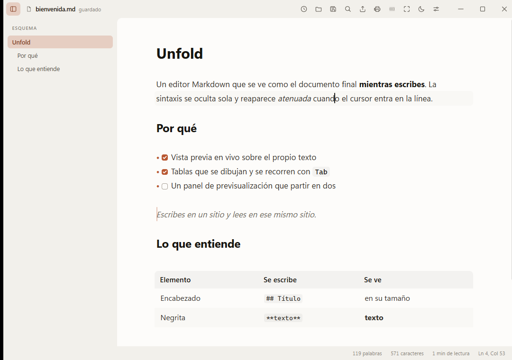

Tus archivos no cambian
El buffer contiene Markdown literal, no un modelo intermedio. Guardar
escribe lo que ya había: abrir un .md con Unfold nunca
reordena tus listas ni normaliza tus comillas.
Windows · gratis · código abierto
Sin panel dividido. Sin previsualización aparte. Escribes en un sitio y lees en ese mismo sitio.
No es un vídeo: es la misma mecánica, dibujada aquí.
El buffer contiene Markdown literal, no un modelo intermedio. Guardar
escribe lo que ya había: abrir un .md con Unfold nunca
reordena tus listas ni normaliza tus comillas.
Ocupa 5 MB porque usa el WebView2 que Windows ya trae, en vez de empaquetar un navegador entero dentro del instalador.
Al poner el cursor en una línea sus marcadores reaparecen, atenuados para no dar un tirón visual, y puedes editarlos. Al salir, se ocultan.
La aplicación trae los dos temas y doce colores de barra. Pruébalos aquí.

Encabezados, negrita, cursiva, tachado, código, citas, listas, tareas, reglas e imágenes.
Se dibujan como tablas y se recorren con Tab, sin dejar de ser Markdown en el archivo.
$…$ y $$…$$ con KaTeX. El bloque YAML del principio se muestra aparte, como ficha.
Cada pestaña con su propio historial de deshacer. Los últimos archivos, a un clic.
Sacado del árbol sintáctico, plegable y ajustable. Una almohadilla dentro de un bloque de código no aparece.
Desde el navegador, el HTML se convierte a Markdown. Una imagen se guarda junto al documento.
HTML autocontenido, en un solo archivo, y PDF a través de la impresión del sistema.
Si lo editas desde otro programa, Unfold avisa en vez de pisarlo al guardar.
Tipografía, tamaño, interlineado, ancho de columna, modo enfoque y máquina de escribir.
El buffer de CodeMirror contiene el Markdown tal cual. Un plugin recorre el árbol sintáctico de la parte visible y oculta los marcadores con decoraciones, aplicando al texto el estilo que corresponde. Cuando la selección toca un elemento, sus marcadores vuelven a mostrarse para poder editarlos.
Sólo se decora el rango visible, y sólo se recalcula cuando cambia el texto, el viewport o la selección. Por eso sigue siendo fluido en archivos grandes.
Hay dos excepciones. Las tablas y las fórmulas de bloque se sustituyen por
HTML real, y eso altera la altura de las líneas; CodeMirror no admite
decoraciones de bloque desde un plugin de vista, así que viven en un
StateField. El frontmatter también se trata aparte, porque
para Markdown no existe: la primera raya --- es una regla
horizontal y la de cierre convierte lo de en medio en un encabezado.
## TítuloTítulo**negrita**negrita*cursiva*cursiva`código`código- [x] hechohecho> una citauna citaUnfold-Setup.exe, unos 7,7 MB.
Se instala para tu usuario. No pide permisos de administrador.
La aplicación te avisa sola cuando haya una versión nueva.